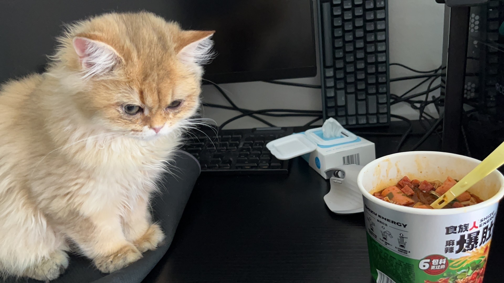
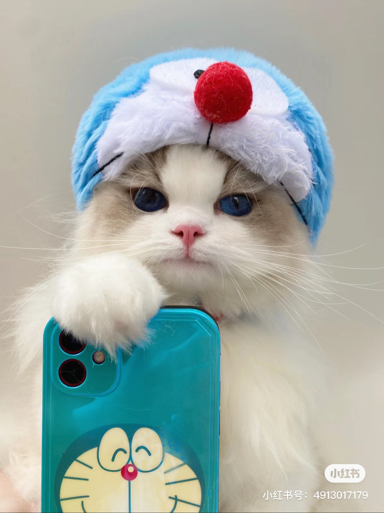
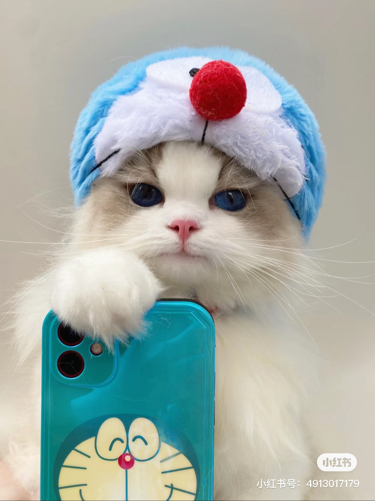

Bacon Q Dog

Bacon Q. Dog is a 9yr old labradoodle. He prefers to spend his days lounging among the three different beds/couches that his family has gifted him. He enjoys a walk or two around the neighborhood, as long as he can pretend that he doesn't see any of the other animals to avoid the embarrassment of not wanting to admit he has no wolf-like skills in chasing them.
At night just as the rest of the family is ready to relax, Bacon suddenly wants to release all of his energy. He will place his toys on a mini couch and frantically drag the couch around, giving his toys "a ride." There is also a lot of rolling. Lots and lots of rolling.
Photo Gallery


Likes
- Belly rubs
- Playing tug-of-war
- Sneaking onto the couch
My cat NuoNuo
He boasts a luxurious British Longhair coat that radiates a healthy sheen. In the sunlight, his fur displays a rich base color with subtle golden stripes, resembling a splendid tapestry. His eyes are like two bright amber jewels, gentle yet sparkling with curiosity and intelligence.
My pet is a five-month-old British Longhair cat. He boasts a magnificent coat that exudes a captivating sheen. His temperament is incredibly pleasant, always brimming with vitality and enthusiasm. Whenever I come home, he eagerly greets me, his tail held high and his eyes filled with joy and anticipation. He enjoys playing, especially chasing small balls or pouncing on strings I dangle from my hand.
His liveliness fills our home with laughter and a vibrant atmosphere. He is also remarkably intelligent, quickly picking up on simple commands, making our communication smooth and effective. He's like a ray of sunshine in the house, bringing warmth and joy whenever he's around. He is an indispensable companion in my life, and I feel incredibly fortunate to share these wonderful moments with him.
Photo Gallery


Likes
- Sleep
- Eat
- Grooming
Dabai
This one-year-old male British Shorthair cat has a coat as white as snow, with bright, clear blue eyes radiating a gentle glow.
He has a remarkably pleasant disposition, always approaching people and other animals with a kind and friendly attitude.
He shares a deep emotional bond with his companion, a kitten named Mahjong. They play and explore together, becoming an inseparable part of each other's lives. Born in New York, this bustling city witnessed his formative years, shaping his refined and gentle demeanor.
Photo Gallery
Likes
- Playtime
- Cuddling
- Exploring
Majiang

His face features are gentle and entrancing, while his bright blue eyes seem to always exude warmth and intelligence.
Growing up alongside his brother Dabai, their connection runs deep. Their days are filled with playful antics, exploring new corners of their home, and curling up together in contented repose. Their companionship is a source of endless joy, a testament to the strong bond they share. Born in the heart of New York, they have found a forever home, becoming irreplaceable members of the family.
He was always mistaken for a Siamese cat because of his black face.
Photo Gallery

Likes
- Hunting
- snack
- Exploring
Kyco
Kyco is a spirited Corgi with a petite and lively frame. His bright, sparkling eyes exude a mischievous charm with every blink. His short legs and plump body showcase his energetic and healthy form.
Known for his playful nature, Kyco is always on the lookout for opportunities to engage with people. He has a fondness for toys, especially those that allow for interactive play, and revels in the joy of each game.
Originally hailing from California, Kyco later moved with his family to New York. This change hasn't diminished his curiosity or vigor; instead, it has ignited a passion for exploring his new surroundings.
Photo Gallery

Likes
- Playtime
- Toys
- Handshake
HuHu
HuHu, the internet-famous cat, is a true beauty. His bright eyes always sparkle with intelligence. His dense fur is soft and glossy, radiating a healthy shine.
He has an incredibly good temperament, always approaching people and other animals with a gentle and friendly demeanor. Whether interacting with family or welcoming new friends, he is always full of warmth and kindness.
Once a stray, Tiger's fate took a turn for the better when he was fortunate enough to be adopted by a kind-hearted individual. Since then, he has found a cozy home and become a cherished member of the family. Tiger's story has also made him a small internet sensation, attracting many people who adore his cute appearance and gentle nature.
Photo Gallery
Likes
- Hug
- Eat
- Quiet Observations
Zhudachong
He is an internet-famous grumpy-faced Ragdoll kitten, with an irresistibly cute appearance. Compared to regular kittens, he is plumper, making him an idol in the hearts of many.
His temperament is incredibly gentle and amiable, always approaching people and other animals with a relaxed attitude. He naturally possesses an endearing expression, attracting countless fans who adore him.
Thanks to his adorable appearance and distinctive grumpy face, he quickly became a star on the internet. He garnered a substantial amount of attention and affection, with many being enamored by his chubby cheeks and unique charm.
Photo Gallery
 

Likes
- Sunny naps
- Eat
- Dresss